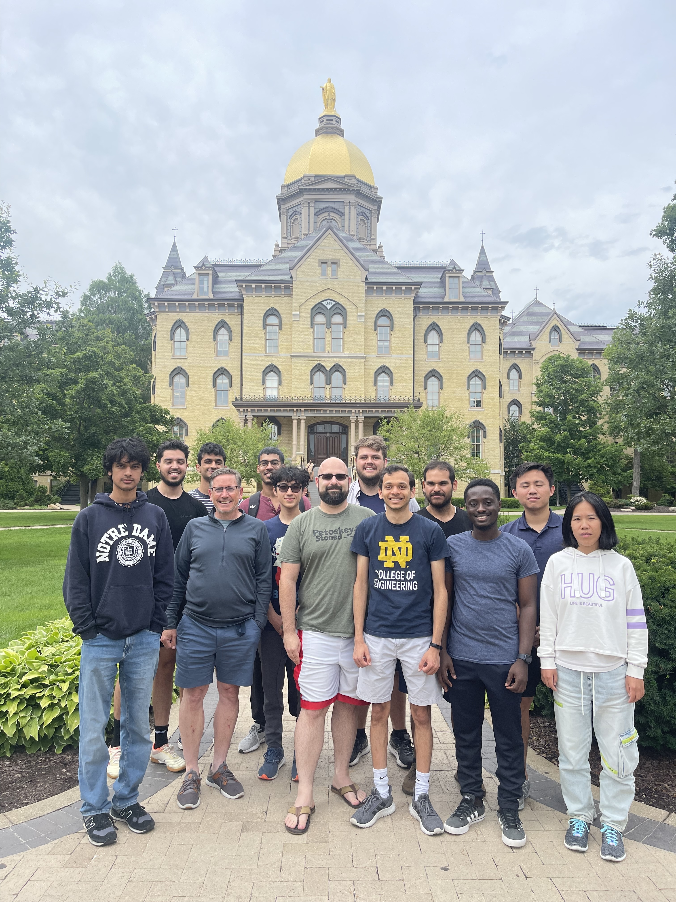

Computational Chemistry
Modeling molecular structure, energetics, and reactivity using quantum chemical and molecular simulation methods.
Assistant Professor of Chemistry
Department of Chemical and Forensic Sciences
Trine University
I am a physical and computational chemist interested in using molecular modeling, scientific computing, and data-driven methods to understand chemical structure, reactivity, and molecular properties.
My work combines tools from computational chemistry, molecular modeling, cheminformatics, and Python-based data analysis. I am especially interested in projects that are accessible to undergraduate researchers and that help students build practical skills in chemistry, coding, and quantitative problem solving.
At Trine University, I teach undergraduate courses in general chemistry, physical chemistry, laboratory chemistry, and data science in chemistry and biology. In both teaching and research, I aim to help students connect chemical ideas with computation, evidence-based reasoning, and real-world scientific questions.
My research interests include computational chemistry, density functional theory, molecular dynamics, molecular modeling, cheminformatics, machine learning for molecular property prediction, and scientific computing education.
Modeling molecular structure, energetics, and reactivity using quantum chemical and molecular simulation methods.
Using molecular descriptors, Python workflows, and machine learning to study chemical patterns and molecular properties.
Developing research projects where students can learn chemistry, coding, data analysis, and scientific communication.
More details about current and future projects are available on the Research page.
I teach courses across general chemistry, physical chemistry, laboratory chemistry, and data science. My teaching emphasizes conceptual understanding, quantitative reasoning, scientific computing, and clear communication.
I am also interested in curriculum development, including laboratory activities and course materials that help students build confidence with data analysis, coding, and computational tools.
Course information and teaching materials are available on the Teaching page.
Students interested in computational chemistry, molecular modeling, cheminformatics, Python programming, or scientific computing are welcome to contact me. Prior coding experience is helpful but not required for all projects.
Visit the Students page for research opportunities, project areas, and resources.
